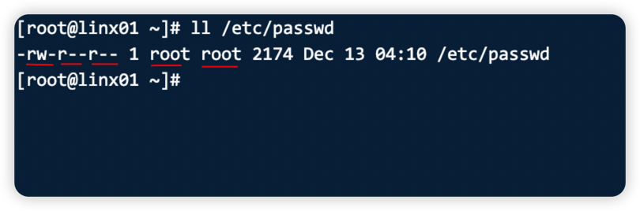
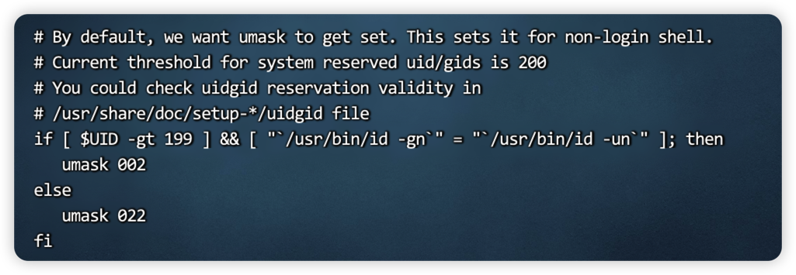
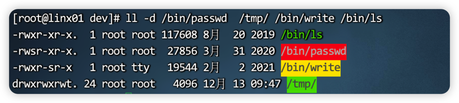

前言
LINUX权限管理也是linux系统管理中很重要的一部分，通过权限管理最终保障系统网站的安全。接下来我们系统的总结一下linux权限相关的知识点，以及遇到权限问题的排查思路，可以应对工作中常见的权限问题。
LINUX基础权限
rwx权限与用户
| 权限的字符 | 含义与说明 |
|---|---|
| r | read 读,是否可以读取内容 |
| w | write 写, 是否可以修改内容 |
| x | executable执行, 是否可以执行内容? 一般执行命令,脚本(shell脚本). |
| - | 没有权限 |

从左到右依次是:所有者权限、用户权限、其他人权限、所有者、用户组
Linux的默认权限
创建文件,文件权限是644
创建目录,目录权限是755
这个是由umask 反掩码(控制Liunx系统默认的权限) 决定的.
1 | [root@linx01 ~]# umask |
文件的默认权限则是 666-umask ,结果若为奇数还需要加一.
目录的默认权限则是777-umask。
Eg:
1 | 文件的默认权限 |
1 | 目录的默认权限 |
上述了解即可,一般情况不需要改动。
此外 在/etc/bashrc 中，可以得到这样一段shell

可以得出 root用户的umask 是 022 其他用的umask 002。当然umask可以直接用命令修改的，但通常也用不到。
设置权限常用的命令
| chown:修改所有者 | |
|---|---|
| 基本用法 chown 用户.用户组 文件/目录 | |
| -R | 递归修改所有者. |
用法：
1 | chown 用户 文件/目录 |
| chmod | ||
|---|---|---|
| chmod 权限 文件/目录 | ||
| -R | 递归修改权限 |
- 通过数字修改
1 | [root@linx01 dev]# touch b |
- 通过字符修改
chmod命令 ugo +/- r/w/x 文件名
1 | [root@linx01 dev]# ll |
文件及目录权限
文件的权限
| 文件的rwx | 含义 |
|---|---|
| r | 读,是否能查看文件内容(显示与查看) |
| w | 写,是否能修改文件内容 |
| x | 执行, 是否能执行这个文件(命令,脚本) |
:warning:对普通用户而言,执行文件只有x权限，没有r权限依然不能执行，见下方验证
1 | [root@linx01 dev]# touch t.sh |
目录的权限
:star2:生产中是不会用root用户的，使用普通用户的时候经常遇到Permission Denied 问题，熟悉目录的权限是熟练解决Permission Denied 问题的基础。
| 目录rwx | 含义 |
|---|---|
| r | 查看,查看目录内容.(站在门口看看屋里的内容) |
| w | 修改,在目录中创建,删除,重命名文件的权限. |
| x | 是否可以进入目录权限. |
- 目录的r权限只能查看内部的文件名字。不能查看详细信息，需要配合x权限1
1 | [root@linx01 dev]# ll -d /opt/dev |
目录只有w权限无法操作，需要x配合
1
2
3
4[test@linx01 opt]$ ll -d /opt/dev
d-w-r-xr-x 2 test test 18 Dec 13 09:13 /opt/dev
[test@linx01 opt]$ touch /opt/dev/t
touch: cannot touch ‘/opt/dev/t’: Permission denied
:star2:删除文件或目录要对文件或目录所在目录拥有w(rwx)权限.
权限问题总结:star2:
操作与权限
| 文件rwx | 目录rwx含义 | |
|---|---|---|
| r | 是否可以查看内容 | 查看,查看目录内容.(站在门口看看屋里的内容),需要x权限配合. |
| w | 是否可以修改文件内容(需要r) | 修改,在目录中创建,删除,重命名文件的权限.需要x配合,(工作一般要rx配合) |
| x | 是否可以执行文件(需要r) | 是否可以进入目录权限. 能否查看或修改目录中文件属性信息. |
| 日常操作 | 需要的权限 |
|---|---|
| 查看文件的内容 | 文件要有r权限. |
| 编辑或修改文件内容 | 文件要有rw权限. |
| 执行脚本/命令 | 文件需要有rx权限. |
| 查看目录内容 | 目录要有rx权限 |
| 创建文件,删除文件 | 文件所在目录要有rwx权限 |
| 重命名 | 文件所在目录要有rwx权限 |
1 | 缺少查看权限 |
三个特殊权限位
除了能直接看到的9位权限外，其实还有3位 ，分别是:suid,sgid,sticky
uid
uid ( setuid) 位通过S字符标识，存在于基本权限的用户权限位的×权限对应的位
置，如果用户权限位对应的x权限位上有x权限，则 suid 就用小写的s标识，suid 的
对应的数字权限为4，完整权限用八进制数 4000 表示。
suid 的作用就是让普通用户可以在执行某个设置了 suid 位的命令或程序时，拥
有和 root 管理员一样的身份和权限（默认)。
可以看一下passwd命令。这样普通用户就可以利用passwd命令来修改自己的密码

suid
suid 的作用就是让普通用户可以在执行某个设置了 suid 位的命令或程序时，拥
有和 root 管理员一样的身份和权限（默认)。
对于二进制命令或者程序来说，sgid 的功能和 suid 基本相同，唯一的区别是 suid
是获得命令所属用户的身份和权限，而 sgid 是获得命令的所属用户组的身份和权限
sbit
粘贴位的用途一般是把一个文件夹的权限都打开，然后来共享文件，像/tmp 目录一样。虽然方便，但是带来了一定的安全險患，生产环境应禁止设置粘滞位权限。
总结
本次我们总结了Linux权限相关的点。对于3个特殊权限 并没有过多的介绍，因为目前生产中也用的极少极少，通常解决问题的方法有很多种，这种不常用的不了解也罢，而像目录权限，文件权限这种基础的知识更应该掌握熟练。

...
...
This is copyright.